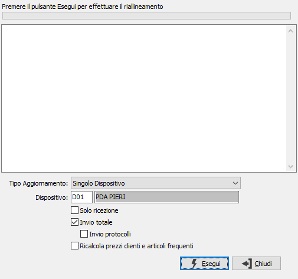

Riallineamento dati concentratore
Il processo di sincronizzazione dati fra dispositivi mobili e la base dati aziendale è stato progettato per ridurre al minimo le informazioni da trasferire. Si basa su un database di sincronizzazione centralizzato (concentratore), che contiene le informazioni e lo stato di tutti i dispositivi. OS1 si sincronizza con il database centralizzato importando i dati provenienti dai dispositivi esterni ed esportando le modifiche alla base dati. I dispositivi esterni, utilizzando una tecnologia basata su web services, si sincronizzano con il database centralizzato.
Questo programma si occupa di sincronizzare OS1 con il database del concentratore.
Può essere lanciato per tutti i dispositivi o per un singolo dispositivo, e in questo caso è possibile effettuare l’invio totale, con o senza l’invio dei protocolli, oppure dei soli dati modificati; inoltre è possibile decidere per ogni elaborazione se aggiornare i prezzi dei clienti e gli articoli frequenti spuntando l'apposita casella.
La pressione del pulsante Esegui avvia la procedura di riallineamento ed eventuali segnalazioni di errore o di operazione effettuata vengono visualizzati nel riquadro di testo.
